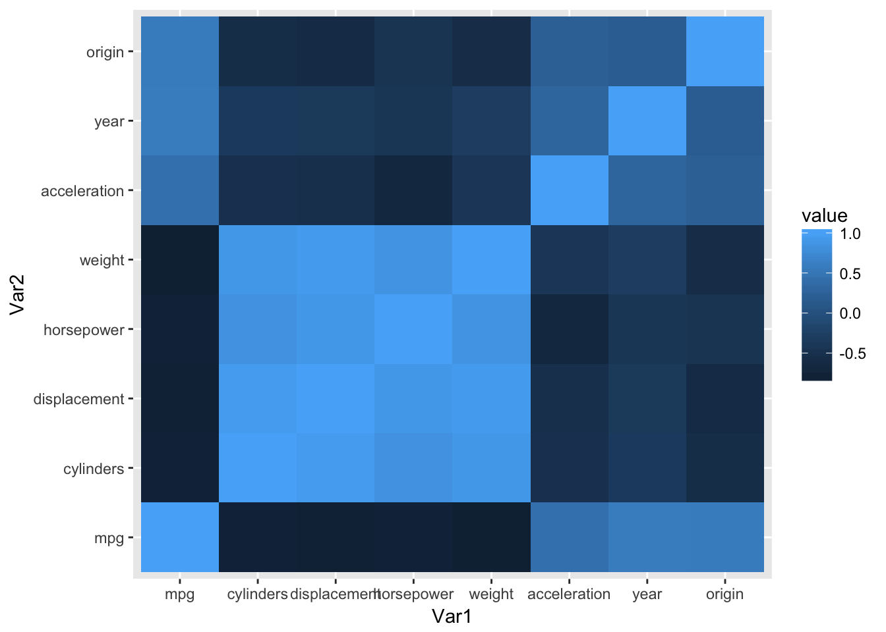
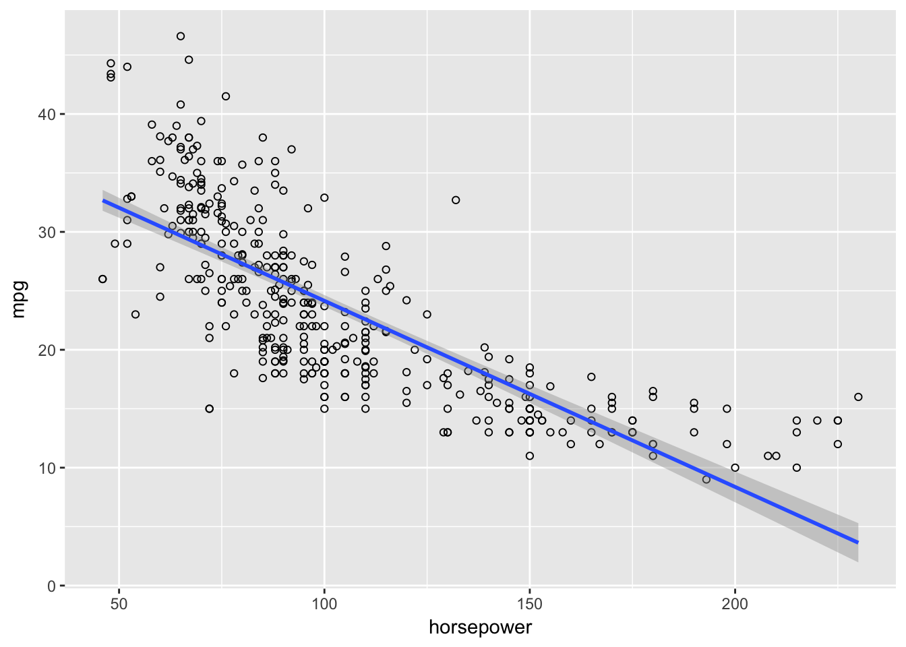
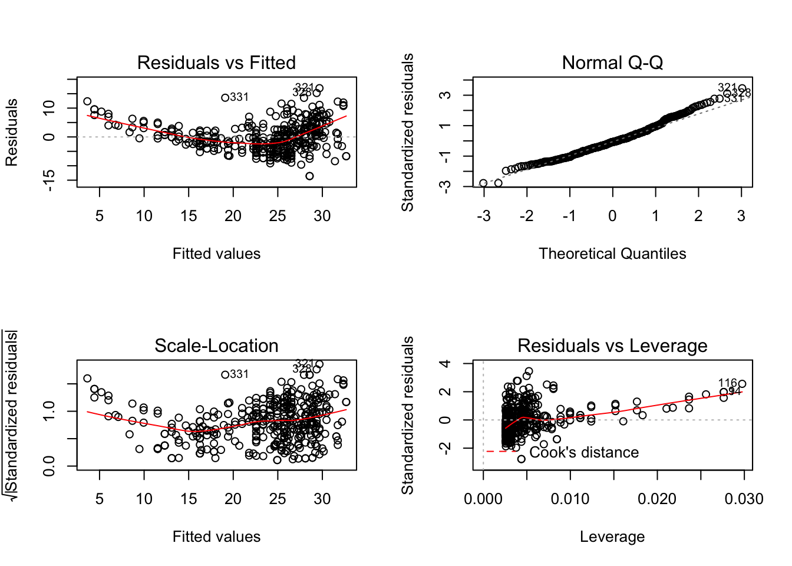

This page contains scrap work produced as a result of reading “Introduction to Statistical Learning.”
The textbook Introduction to Statistical Learning is geared towards people that are not necessarily from a mathematical background, and somehow contains no matrix algebra. It is the lite version of Elements of Statistical Learning, which is a more mathematically rigorous approach to the same topics and is written by the same authors. The goal of the intro version of the book is to emphasize practical application and computation in R over the mathematical aspects.
Data for the labs in the book are contained in the ISLR and MASS packages. A list is available on page 14.
library(ISLR)
library(MASS)
library(data.table)
library(ggplot2)
library(reshape2)college = data.table(College)
college[, name := row.names(College)]
college[, elite := (Top10perc > 50)]head(college)## Private Apps Accept Enroll Top10perc Top25perc F.Undergrad P.Undergrad
## 1: Yes 1660 1232 721 23 52 2885 537
## 2: Yes 2186 1924 512 16 29 2683 1227
## 3: Yes 1428 1097 336 22 50 1036 99
## 4: Yes 417 349 137 60 89 510 63
## 5: Yes 193 146 55 16 44 249 869
## 6: Yes 587 479 158 38 62 678 41
## Outstate Room.Board Books Personal PhD Terminal S.F.Ratio perc.alumni
## 1: 7440 3300 450 2200 70 78 18.1 12
## 2: 12280 6450 750 1500 29 30 12.2 16
## 3: 11250 3750 400 1165 53 66 12.9 30
## 4: 12960 5450 450 875 92 97 7.7 37
## 5: 7560 4120 800 1500 76 72 11.9 2
## 6: 13500 3335 500 675 67 73 9.4 11
## Expend Grad.Rate name elite
## 1: 7041 60 Abilene Christian University FALSE
## 2: 10527 56 Adelphi University FALSE
## 3: 8735 54 Adrian College FALSE
## 4: 19016 59 Agnes Scott College TRUE
## 5: 10922 15 Alaska Pacific University FALSE
## 6: 9727 55 Albertson College FALSEcollege[, sum(elite)]## [1] 78rm(college)auto = data.table(Auto)
qplot(x=Var1, y=Var2, data=melt(cor(auto[, !"name", with=FALSE])), fill=value, geom="tile")
rm(auto)It looks like basically everything would be useful in predicting mpg, with cylinders, displacement, horsepower, and weight being the most useful.
library(ggplot2)
b0 <- 50
b1 <- 20
b2 <- 0.07
b3 <- 35
b4 <- 0.01
b5 <- -10
x2 <- 120
x3 <- c(0,1)
earnings <- function(x1, x2) {
y <- b0 + b1*x1 + b2*x2 + b3*x3 + b4*x1*x2 + b5*x1*x3
return(y)
}
for (gpa in 0:4) {
print(earnings(gpa, 120))
}
earnings(4,110)auto = data.table(Auto)
reg <- lm(mpg ~ horsepower, data = auto)
summary(reg)
predict(reg, data.table(horsepower = 98), interval = "confidence")
predict(reg, data.table(horsepower = 98), interval = "prediction")Yes there is a strong, negative relationship between the predictor and response.
ggplot(auto, aes(x = horsepower, y = mpg)) +
geom_point(shape = 1) +
geom_smooth(method = lm)
par(mfrow=c(2,2))
plot(reg) ### #9
auto <- data.table(Auto)smarket <- data.table(Smarket)head(smarket)## Year Lag1 Lag2 Lag3 Lag4 Lag5 Volume Today Direction
## 1: 2001 0.381 -0.192 -2.624 -1.055 5.010 1.1913 0.959 Up
## 2: 2001 0.959 0.381 -0.192 -2.624 -1.055 1.2965 1.032 Up
## 3: 2001 1.032 0.959 0.381 -0.192 -2.624 1.4112 -0.623 Down
## 4: 2001 -0.623 1.032 0.959 0.381 -0.192 1.2760 0.614 Up
## 5: 2001 0.614 -0.623 1.032 0.959 0.381 1.2057 0.213 Up
## 6: 2001 0.213 0.614 -0.623 1.032 0.959 1.3491 1.392 Upcor(smarket[, -c("Direction"), with=F])## Year Lag1 Lag2 Lag3 Lag4
## Year 1.00000000 0.029699649 0.030596422 0.033194581 0.035688718
## Lag1 0.02969965 1.000000000 -0.026294328 -0.010803402 -0.002985911
## Lag2 0.03059642 -0.026294328 1.000000000 -0.025896670 -0.010853533
## Lag3 0.03319458 -0.010803402 -0.025896670 1.000000000 -0.024051036
## Lag4 0.03568872 -0.002985911 -0.010853533 -0.024051036 1.000000000
## Lag5 0.02978799 -0.005674606 -0.003557949 -0.018808338 -0.027083641
## Volume 0.53900647 0.040909908 -0.043383215 -0.041823686 -0.048414246
## Today 0.03009523 -0.026155045 -0.010250033 -0.002447647 -0.006899527
## Lag5 Volume Today
## Year 0.029787995 0.53900647 0.030095229
## Lag1 -0.005674606 0.04090991 -0.026155045
## Lag2 -0.003557949 -0.04338321 -0.010250033
## Lag3 -0.018808338 -0.04182369 -0.002447647
## Lag4 -0.027083641 -0.04841425 -0.006899527
## Lag5 1.000000000 -0.02200231 -0.034860083
## Volume -0.022002315 1.00000000 0.014591823
## Today -0.034860083 0.01459182 1.000000000glm.fit <- glm(Direction ~ Lag1 + Lag2 + Lag3 + Lag4 + Lag5 + Volume, data = smarket, family = binomial)
summary(glm.fit)##
## Call:
## glm(formula = Direction ~ Lag1 + Lag2 + Lag3 + Lag4 + Lag5 +
## Volume, family = binomial, data = smarket)
##
## Deviance Residuals:
## Min 1Q Median 3Q Max
## -1.446 -1.203 1.065 1.145 1.326
##
## Coefficients:
## Estimate Std. Error z value Pr(>|z|)
## (Intercept) -0.126000 0.240736 -0.523 0.601
## Lag1 -0.073074 0.050167 -1.457 0.145
## Lag2 -0.042301 0.050086 -0.845 0.398
## Lag3 0.011085 0.049939 0.222 0.824
## Lag4 0.009359 0.049974 0.187 0.851
## Lag5 0.010313 0.049511 0.208 0.835
## Volume 0.135441 0.158360 0.855 0.392
##
## (Dispersion parameter for binomial family taken to be 1)
##
## Null deviance: 1731.2 on 1249 degrees of freedom
## Residual deviance: 1727.6 on 1243 degrees of freedom
## AIC: 1741.6
##
## Number of Fisher Scoring iterations: 3library(broom)
tidy(glm.fit)## term estimate std.error statistic p.value
## 1 (Intercept) -0.126000257 0.24073574 -0.5233966 0.6006983
## 2 Lag1 -0.073073746 0.05016739 -1.4565986 0.1452272
## 3 Lag2 -0.042301344 0.05008605 -0.8445733 0.3983491
## 4 Lag3 0.011085108 0.04993854 0.2219750 0.8243333
## 5 Lag4 0.009358938 0.04997413 0.1872757 0.8514445
## 6 Lag5 0.010313068 0.04951146 0.2082966 0.8349974
## 7 Volume 0.135440659 0.15835970 0.8552723 0.3924004head(augment(glm.fit, type.predict = "response"))## Direction Lag1 Lag2 Lag3 Lag4 Lag5 Volume .fitted .se.fit
## 1 Up 0.381 -0.192 -2.624 -1.055 5.010 1.1913 0.5070841 0.07318447
## 2 Up 0.959 0.381 -0.192 -2.624 -1.055 1.2965 0.4814679 0.04153081
## 3 Down 1.032 0.959 0.381 -0.192 -2.624 1.4112 0.4811388 0.04005380
## 4 Up -0.623 1.032 0.959 0.381 -0.192 1.2760 0.5152224 0.02530565
## 5 Up 0.614 -0.623 1.032 0.959 0.381 1.2057 0.5107812 0.02751167
## 6 Up 0.213 0.614 -0.623 1.032 0.959 1.3491 0.5069565 0.02548582
## .resid .hat .sigma .cooksd .std.resid
## 1 1.165400 0.021428172 1.178920 0.0031073806 1.178090
## 2 1.209062 0.006908744 1.178891 0.0010777824 1.213261
## 3 -1.145530 0.006426395 1.178943 0.0008623598 -1.149228
## 4 1.151657 0.002563882 1.178940 0.0003463999 1.153136
## 5 1.159150 0.003028976 1.178934 0.0004169664 1.160909
## 6 1.165616 0.002598611 1.178929 0.0003629259 1.167133glance(glm.fit)## null.deviance df.null logLik AIC BIC deviance df.residual
## 1 1731.175 1249 -863.792 1741.584 1777.5 1727.584 1243contrasts(smarket$Direction)## Up
## Down 0
## Up 1glm.pred <- data.table(augment(glm.fit, type.predict = "response"))
glm.pred[.fitted > 0.5, train_predict := "Up"]## Direction Lag1 Lag2 Lag3 Lag4 Lag5 Volume .fitted
## 1: Up 0.381 -0.192 -2.624 -1.055 5.010 1.19130 0.5070841
## 2: Up 0.959 0.381 -0.192 -2.624 -1.055 1.29650 0.4814679
## 3: Down 1.032 0.959 0.381 -0.192 -2.624 1.41120 0.4811388
## 4: Up -0.623 1.032 0.959 0.381 -0.192 1.27600 0.5152224
## 5: Up 0.614 -0.623 1.032 0.959 0.381 1.20570 0.5107812
## ---
## 1246: Up 0.422 0.252 -0.024 -0.584 -0.285 1.88850 0.5198924
## 1247: Down 0.043 0.422 0.252 -0.024 -0.584 1.28581 0.5059256
## 1248: Up -0.955 0.043 0.422 0.252 -0.024 1.54047 0.5392683
## 1249: Down 0.130 -0.955 0.043 0.422 0.252 1.42236 0.5261183
## 1250: Down -0.298 0.130 -0.955 0.043 0.422 1.38254 0.5179166
## .se.fit .resid .hat .sigma .cooksd .std.resid
## 1: 0.07318447 1.165400 0.021428172 1.178920 0.0031073806 1.178090
## 2: 0.04153081 1.209062 0.006908744 1.178891 0.0010777824 1.213261
## 3: 0.04005380 -1.145530 0.006426395 1.178943 0.0008623598 -1.149228
## 4: 0.02530565 1.151657 0.002563882 1.178940 0.0003463999 1.153136
## 5: 0.02751167 1.159150 0.003028976 1.178934 0.0004169664 1.160909
## ---
## 1246: 0.02346319 1.143795 0.002205581 1.178946 0.0002922591 1.145058
## 1247: 0.01860636 -1.187492 0.001384981 1.178912 0.0002031627 -1.188316
## 1248: 0.01972976 1.111343 0.001566731 1.178971 0.0001918234 1.112215
## 1249: 0.01965758 -1.222127 0.001549917 1.178883 0.0002465876 -1.223075
## 1250: 0.01995897 -1.208005 0.001595493 1.178895 0.0002456526 -1.208970
## train_predict
## 1: Up
## 2: NA
## 3: NA
## 4: Up
## 5: Up
## ---
## 1246: Up
## 1247: Up
## 1248: Up
## 1249: Up
## 1250: Upglm.pred[.fitted <= 0.5, train_predict := "Down"]## Direction Lag1 Lag2 Lag3 Lag4 Lag5 Volume .fitted
## 1: Up 0.381 -0.192 -2.624 -1.055 5.010 1.19130 0.5070841
## 2: Up 0.959 0.381 -0.192 -2.624 -1.055 1.29650 0.4814679
## 3: Down 1.032 0.959 0.381 -0.192 -2.624 1.41120 0.4811388
## 4: Up -0.623 1.032 0.959 0.381 -0.192 1.27600 0.5152224
## 5: Up 0.614 -0.623 1.032 0.959 0.381 1.20570 0.5107812
## ---
## 1246: Up 0.422 0.252 -0.024 -0.584 -0.285 1.88850 0.5198924
## 1247: Down 0.043 0.422 0.252 -0.024 -0.584 1.28581 0.5059256
## 1248: Up -0.955 0.043 0.422 0.252 -0.024 1.54047 0.5392683
## 1249: Down 0.130 -0.955 0.043 0.422 0.252 1.42236 0.5261183
## 1250: Down -0.298 0.130 -0.955 0.043 0.422 1.38254 0.5179166
## .se.fit .resid .hat .sigma .cooksd .std.resid
## 1: 0.07318447 1.165400 0.021428172 1.178920 0.0031073806 1.178090
## 2: 0.04153081 1.209062 0.006908744 1.178891 0.0010777824 1.213261
## 3: 0.04005380 -1.145530 0.006426395 1.178943 0.0008623598 -1.149228
## 4: 0.02530565 1.151657 0.002563882 1.178940 0.0003463999 1.153136
## 5: 0.02751167 1.159150 0.003028976 1.178934 0.0004169664 1.160909
## ---
## 1246: 0.02346319 1.143795 0.002205581 1.178946 0.0002922591 1.145058
## 1247: 0.01860636 -1.187492 0.001384981 1.178912 0.0002031627 -1.188316
## 1248: 0.01972976 1.111343 0.001566731 1.178971 0.0001918234 1.112215
## 1249: 0.01965758 -1.222127 0.001549917 1.178883 0.0002465876 -1.223075
## 1250: 0.01995897 -1.208005 0.001595493 1.178895 0.0002456526 -1.208970
## train_predict
## 1: Up
## 2: Down
## 3: Down
## 4: Up
## 5: Up
## ---
## 1246: Up
## 1247: Up
## 1248: Up
## 1249: Up
## 1250: Uptable(glm.pred[, train_predict], smarket$Direction)##
## Down Up
## Down 145 141
## Up 457 507train <- smarket[Year < 2005]
test <- smarket[Year >= 2005]
glm.fit <- glm(Direction ~ Lag1 + Lag2 + Lag3 + Lag4 + Lag5 + Volume, data = train, family = binomial)
glm.probs <- predict(glm.fit, test, type = "response")
glm.pred <- rep("Down", dim(test)[1])
glm.pred[glm.probs > 0.5] <- "Up"
table(glm.pred, test$Direction)I don't have a copyright :( © 2016 :( All rights reserved?